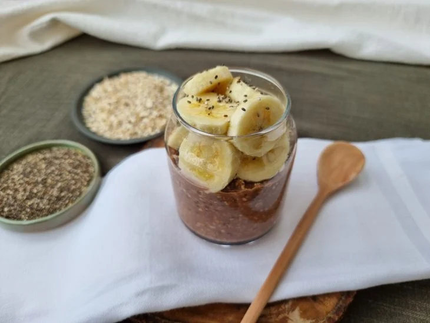
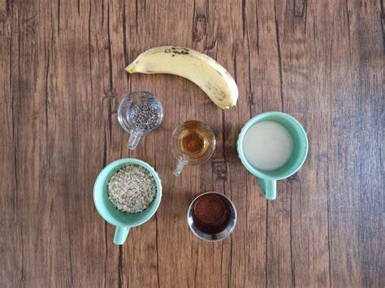

Receita de Overnight Oats:

Ingredientes:
- 2 colheres de sopa de aveia;
- 1/2 xícara de chá de leite;
- 1 colher de sopa de sementes de chia;
- 1 banana;
- 1/2 colher de sopa de cacau em pó;
- 3 morangos;
- Mel

Modo de preparo:
- Num pote pequeno, colocar a aveia, as sementes de chia e o cacau em pó
- Misturar bem
- Adicionar o leite ou bebida vegetal, misturando bem
- Tampar e colocar na geladeira para descansar de um dia para o outro
- Antes de servir, cortar a banana e o morango
- Adicionar ao Overnight.